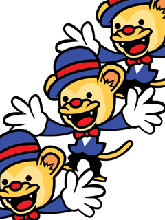
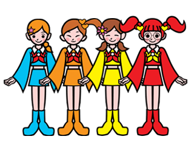
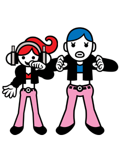
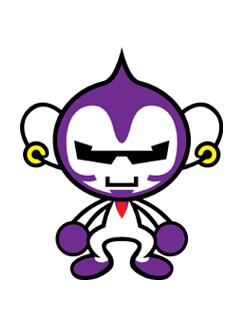

▲index
｜
ステージ１
｜
ステージ２
｜
ステージ３
｜
ステージ４
｜
ステージ５
｜
ステージ６
｜
おまけコーナー
｜
もろもろ

彼らはもともと、通称「パチパチ３人衆」として
知られていたグループ。
きちんとしたグループ名で世間に認められたい彼らは
このたび「バリバリ３人衆」として再デビュー！
気合を感じる「バリバリ」という響き。
でもこれは、スーツをバリッと着ていることに
由来するとのこと。
「なーんだ」という声が多数よせられ
それを耳にした彼らはソワソワしてしまい、
また改名とのウワサも！？
つぎは、どんな３人衆かな？
つい先日まで「ぼんおどり屋」として
ドンパンズという名で活動していた彼女たち。
そんな彼女たちに目をつけていた
某プロデューサーが彼女たちを
メジャーな舞台に登場させた！
ポップで楽しい音楽に合わせた
彼女たちの「オドリ」が
世間を よりいっそうハッピーにする。

今、宇宙で大人気のダンサー。
とにかく動きにキレがあり
宇宙ダンサーのあこがれの的だ。
Ｊａｚｚｙでエレガント、それでいて抜群のキレ。
最高だ。
彼らのライバルとして、週刊誌などで
たびたび とりあげられるスペースダンサーズは、
専門家によるとまだまだキレが足りていなく
コスモダンサーズには遠く及ばないそうだ。
ラップメンの人気爆発と
ほぼ同時に現われた女性ラッパー。
ラップメンのパクリだという
一部の批判をものともせず、
彼女たちの人気はうなぎのぼり。
しかし、ラップメンの人気に
あやかったという部分も否めず
これから彼女たちの真価が問われてゆくだろう。
男女ラップ対決、ますます目がはなせない！


タップのインストラクターをしている おさるさん。
夜はＤＪをしており、
週末はノリノリのＳＡＬＵセレクトで
若者達のストレスを開放している。
ラジオ番組でもＤＪ ＳＡＬＵとして司会をしており、
この おさるさん、実はとてもマルチだ。
思春期はとんがっていた時期もあるそうで、
人生経験は豊富なようだ。
▲index
｜
ステージ１
｜
ステージ２
｜
ステージ３
｜
ステージ４
｜
ステージ５
｜
ステージ６
｜
おまけコーナー
｜
もろもろ
リズム天国トップ
｜
リズムでゲーム！？
｜
ユニークなリズムゲームが40種類！
｜
オマケ要素も盛りだくさん